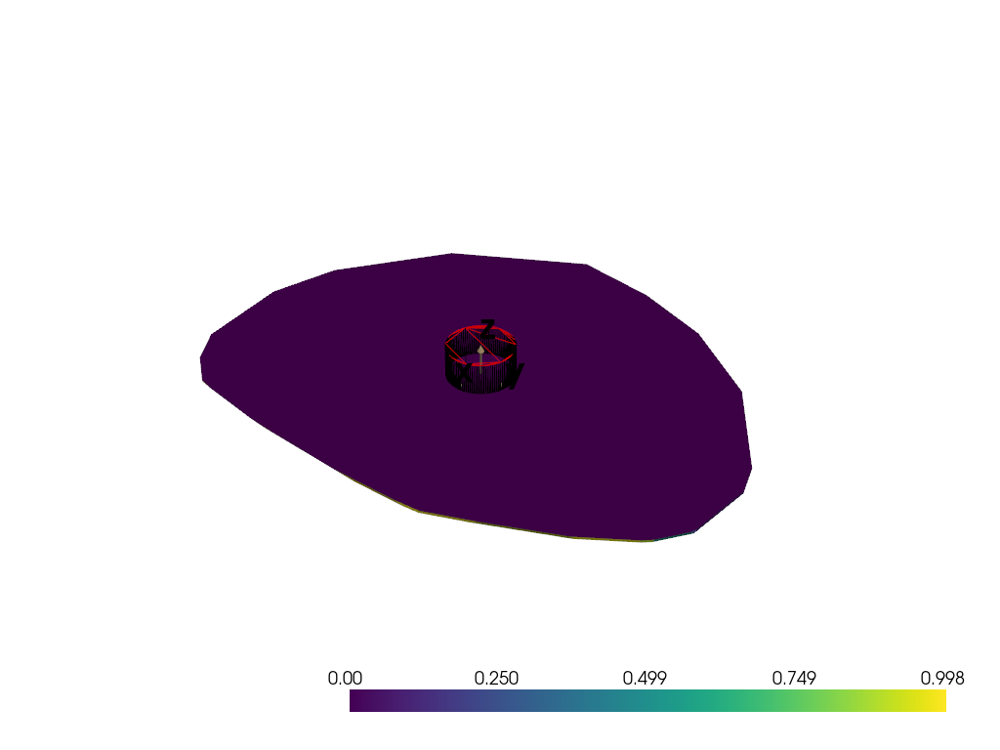
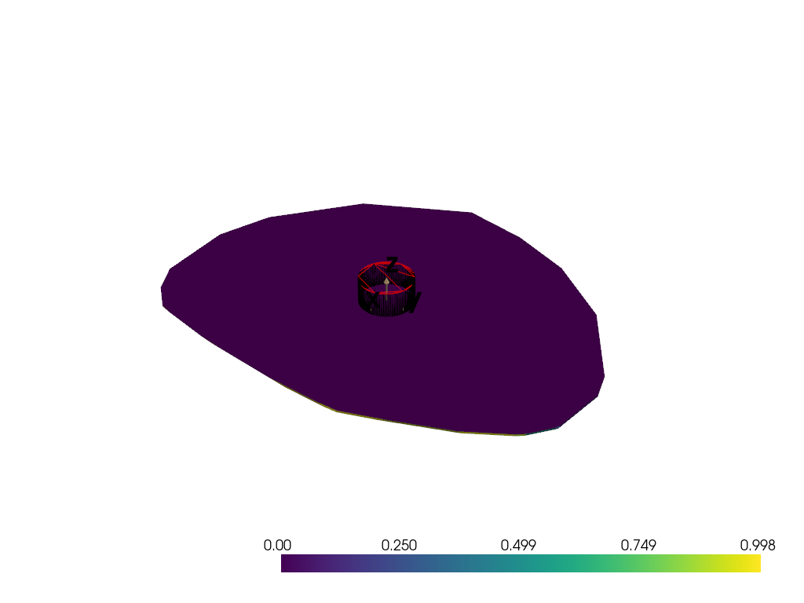

Note
Go to the end to download the full example code
EGI Jacobian#
Computing the change in the convex object guess (via its EGI) due to a change in the light curve
 
WARNING: no observation constraints assigned!
Elapsed time: 3.72e-04 seconds
Elapsed time: 2.56e+00 seconds
Elapsed time: 6.20e-02 seconds
357532827.48393345
357532827.48393357
357532827.48393357
Elapsed time: 9.31e-01 seconds
[ 1169178.43586841 214469.96839635 1154769.45329488 3614041.59598634
2655727.28149229 4657097.81891942 5895141.22997452 7856151.48866839
2203503.01005839 10199284.39601439 3597229.65135699 10358152.29232103
13047836.26468207 11521312.16718349 9902213.11920724 5161488.40317174
20399325.82178754 5367327.94789162 7730346.20788646 14815605.2551238
8569009.17242199 6426432.54972096 20304352.5578926 29866300.14288054
40036333.53800026 39549825.14430725 20829044.71902863 18351677.829639
14429331.9151962 17427201.51258311 223116.5929776 ]
import matplotlib.pyplot as plt
import numpy as np
import pyvista as pv
from scipy.interpolate import interpn
from scipy.spatial import SphericalVoronoi, geometric_slerp
from sklearn.neighbors import BallTree
import mirage as mr
import mirage.vis as mrv
itensor = np.diag([1.0, 2.0, 3.0])
w0 = 1e-2 * mr.hat(np.array([[1.0, 5.0, 0.0]]))
w0 = 1e-2 * mr.rand_unit_vectors(1)
q0 = np.array([[0.0, 0.0, 0.0, 1.0]])
q0 = mr.rand_quaternions(1)
idate = mr.utc(2023, 1, 1, 5)
obs_time = mr.hours(3)
obs_dt = mr.seconds(10)
pl_shape = (3, 3)
inversions = pl_shape[0] * pl_shape[1]
obj_file = "cylinder.obj"
station = mr.Station(preset="pogs")
brdf = mr.Brdf(name="phong", cd=0.5, cs=0.0, n=10)
brdf_inversion = brdf
attitude = mr.RbtfAttitude(w0=w0, q0=q0, itensor=itensor)
dates, epsecs = mr.date_arange(idate, idate + obs_time, obs_dt, return_epsecs=True)
q_of_t, w_of_t = attitude.propagate(epsecs)
dcms_of_t = mr.quat_to_dcm(q_of_t)
obj = mr.SpaceObject(obj_file, identifier="goes 15")
lc_ccd_signal_sampler, aux_data = station.observe_light_curve(
obj, attitude, brdf, dates, use_engine=False, model_scale_factor=4
)
sun_body = aux_data["sun_vector_object_body"]
obs_body = aux_data["observer_vector_object_body"]
sint = aux_data["sint"]
lc_hat = aux_data["lc_clean_norm"]
constr = aux_data["all_constraints_satisfied"]
br_mean = aux_data["background_mean"]
airy_disk_pixels = aux_data["airy_disk_pixels"]
obs_to_moon = aux_data["obs_to_moon"]
lc_clean = aux_data["lc_clean"]
snr = aux_data["snr"]
mr.tic()
lc_sampled = lc_ccd_signal_sampler()
mr.toc()
plt.plot(epsecs, lc_clean)
plt.scatter(epsecs, lc_sampled, s=2, c="r")
plt.show()
az = np.linspace(-np.pi, np.pi, 100)
el = np.linspace(-np.pi / 2, np.pi / 2, 110)
gaz, gel = np.meshgrid(az, el)
n_cand = np.vstack(mr.sph_to_cart(gaz.flatten(), gel.flatten())).T
mr.tic()
G = brdf.compute_reflection_matrix(sun_body, obs_body, n_cand)
mr.toc()
egi = mr.optimize_egi(lc_sampled / np.max(lc_sampled), sun_body, obs_body, brdf)
egi_az, egi_el, egi_a = mr.cart_to_sph(egi[:, 0], egi[:, 1], egi[:, 2])
G_deep = G.reshape(-1, *gel.shape)
G_deep /= np.sum(np.sum(G_deep, axis=1), axis=1).reshape(-1, 1, 1)
# print(G.shape, G_deep.shape, gel.shape)
# endd
total_influence_normal_grid = np.sum(G_deep, axis=0) * np.cos(gel)
total_counts = (
total_influence_normal_grid
/ np.sum(total_influence_normal_grid)
* np.sum(lc_sampled)
)
d_lc = lambda epsec, n_az, n_el: interpn((epsecs, az, el), G_deep, (epsec, n_az, n_el))
grid = pv.ImageData(
spacing=(
10 / G_deep.shape[0],
2 * np.pi / G_deep.shape[1],
np.pi / G_deep.shape[2],
),
origin=(0, 0, -np.pi / 2),
dimensions=G_deep.shape,
)
grid["data"] = G_deep.flatten(order="F")
pl = pv.Plotter()
pl.add_volume(grid, cmap="plasma")
pl.show_bounds()
pl.show()
mr.tic()
azf = np.linspace(-np.pi, np.pi, 1000)
elf = np.linspace(-np.pi / 2, np.pi / 2, 1000)
gazf, gelf = np.meshgrid(azf, elf)
total_counts_interp = interpn((el, az), total_influence_normal_grid, (gelf, gazf))
total_counts_interp = (
total_counts_interp / np.sum(total_counts_interp) * np.sum(lc_sampled)
)
mr.toc()
print(np.sum(total_counts_interp))
print(np.sum(lc_sampled))
print(np.sum(total_counts))
plt.imshow(
total_counts_interp,
extent=[-np.pi, np.pi, -np.pi / 2, np.pi / 2],
cmap="plasma",
clim=[0, np.max(total_counts_interp)],
)
# plt.imshow(np.flipud(total_influence_normal_grid), extent=[-np.pi, np.pi, -np.pi/2, np.pi/2],
# cmap='cividis', clim=[0, np.max(total_influence_normal_grid)], alpha=0.2)
plt.scatter(egi_az, egi_el, c=egi_a)
sv = SphericalVoronoi(mr.hat(egi))
sv.sort_vertices_of_regions()
t_vals = np.linspace(0, 1, 500)
for a, region in zip(egi_a, sv.regions):
n = len(region)
for i in range(n):
start = sv.vertices[region][i]
end = sv.vertices[region][(i + 1) % n]
result = geometric_slerp(start, end, t_vals)
raz, rel, _ = mr.cart_to_sph(result[:, 0], result[:, 1], result[:, 2])
plt.scatter(raz, rel, c="w", s=0.1)
sv_kd_tree = BallTree(np.vstack((egi_el, egi_az)).T, metric="haversine")
mr.tic()
nearest_vertex_indices = sv_kd_tree.query(np.vstack((gelf.ravel(), gazf.ravel())).T)[
1
].reshape(gazf.shape)
mr.toc()
# plt.imshow(np.flipud(nearest_vertex_indices), extent=[-np.pi, np.pi, -np.pi/2, np.pi/2],
# cmap='plasma')
total_counts_of_egi_vertices = np.zeros_like(egi_a)
for i in range(len(egi_a)):
total_counts_of_egi_vertices[i] = np.sum(
total_counts_interp[nearest_vertex_indices == i]
)
print(total_counts_of_egi_vertices)
mrv.texit("Influence of object normals", "Azimuth [rad]", "Elevation [rad]", grid=False)
plt.colorbar(cax=mrv.get_cbar_ax(), label="Influence")
plt.show()
Total running time of the script: ( 0 minutes 7.560 seconds)